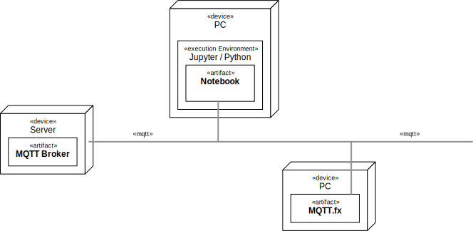
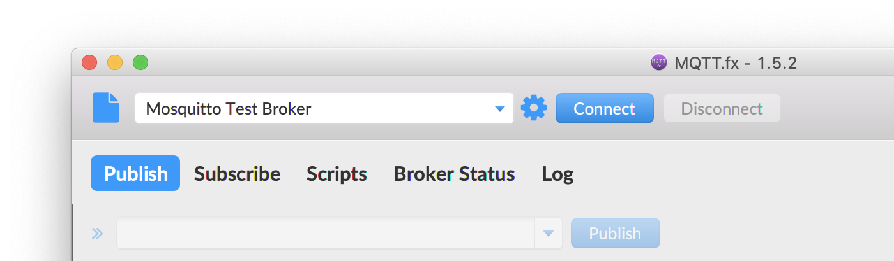
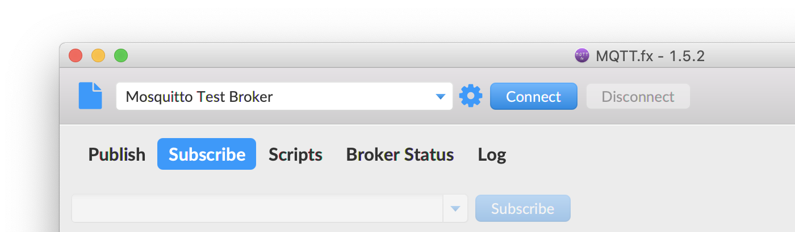

Communication
The deployment diagram below shows today's distributed setup:

The setup consists of at least three components:
- The MQTT Broker: This can be the MQTT broker for this course (
mqtt.item.ntnu.no) or a broker running on your local machine.
- MQTT.FX: This is a generic MQTT client that is suitable for debugging MQTT-based applications. You can connect to an MQTT broker and subscribe and publish to topics.
- Jupyter Notebooks: We use MQTT client in notebooks to show you how to program in Python. The application in the notebooks act as MQTT clients.
Note: When you work from home, you can work on your own MQTT broker too. However, other students not part of your home network may not be able to reach your MQTT broker. If you want to connect your applications and are in different networks (like in the last task) work with the central broker at NTNU, (mqtt.item.ntnu.no).
Tips for This Unit
- Document your progress and the result of all experiments in a document.
- The tasks don't require much engineering work this week, so you have enough time to care about the details and the setup.
- Most tasks are related to running code, which can be difficult in teams.
- This requires special attention from the facilitator.
- Make sure everyone is on board.
- Distribute tasks, but make sure everyone covers all.
- Try to work distributed on several PCs for the communication task. (You can run Broker, MQTT.FX and Python all on different computers, or run all on the same one. We recommend to try the distributed solution.)
- Dare to ask questions, or repeat individually.
- The programming tasks are important for the remainder of the course.
Task: Running MQTT.FX
MQTT.FX is a desktop application that connects to an MQTT broker and that can publish and subscribe to arbitrary topics.
This is a very tool useful during development.
(If you wonder, the name MQTT.FX just comes from the fact that it is implemented in Java FX, but you can forget about that.)
Essentially, MQTT.FX is a MQTT client, and can as such connect to an MQTT broker, subscribe to topics and send messages to topics. This does not sound like much. However, MQTT.FX has a generic user interface, you can use MQTT.FX while you construct your application to see how the other system components publish messages, and you can also "inject" messages into the system, by publishing to any topic you want.
Using MQTT.FX is really simple, but because we have now talked about brokers, clients, publishers and subscribers, you may loose track and wonder what this MQTT.FX does: Think of it as a debugger for MQTT, and you can use it like Wireshark. Once the system is done, you don't need MQTT.FX anymore.
Download MQTT.FX
Publishing Messages
Imagine you have created a MQTT client that runs a certain action when it receives a message, but you are not done with the component that should send the message. To test at least the component that should receive the message, you can use MQTT.FX to publish a message with that content to the topic, and the component under test will behave as if the message was sent in the final system.

Observing Communication
Because MQTT uses the publish-subscribe pattern, it can simply subscribe to any topics that are interesting in your application and you can see which messages are sent to these topics, without disturbing the communication in the system. To achieve the same in HTTP, for instance, you need a tool like Wireshark.

Task: Observing a Public MQTT Broker
There are some public MQTT brokers to which anyone can connect.
List of Public MQTT Brokers
- Connect MQTT.FX to a public MQTT broker. (I usually use the MQTT broker of the Eclipse IoT project, with the address
iot.eclipse.org and port 1883.)
- Subscribe to topic
#
- Have a look at the incoming messages, the topic they are sent to, and their payload.
Task: Running Your Own MQTT Broker (Optional)
You can always use such a public broker for testing, but on most cases it is better to have your own broker running.
Install the Mosquitto MQTT Broker on your laptop. This is an open-source MQTT broker that is relatively easy to install and run.
- Install Mosquitto from https://mosquitto.org/download/
- Start it locally. You can use it with the option
-v (verbose) so that it prints more information.
- Test how the broker works by connecting to it with MQTT.FX, as explained above.
- Try to have the MQTT broker on one PC, and communicate with other PCs that have MQTT.FX running.
- For that to be possible, you need to be able to ping the PC that runs the broker.
- You need to be on the same network.
- If nothing works, you can also have MQTT.FX and the broker installed on the same PC, and use address
localhost.
- If you have trouble installing Mosquitto, try to find help with others on MS Teams!
Task: Python Notebooks
Now we are going to combine what we learned about MQTT with Python.
MQTT Part 1 - Connect to Broker
This notebook explains Paho, the Python client for MQTT and connects to a broker.
MQTT Part 2 - Connect and Publish
This notebook extends the MQTT client and also publishes messages, forwarding to another topic.
MQTT Part 3 - MQTT and STMPY
This notebook shows you how to connect the MQTT client with state machines in STMPY.
Challenge: Quiz Show Buzzers
The tasks above did not require any programming from you so that you can focus on installing and setting up all the components as well as getting familiar with the APIs and how everything works.
- You now should have very detailed knowledge about how MQTT works, and operate both clients and a broker.
- You have also seen how we can connect MQTT with state machines written in STMPY.
- MQTT.FX can act as an input and output device into the system, as it can send and receive arbitrary MQTT messages.
So the following task should be doable now:
Create a small and very prototypical system that realizes the timer and buzzers for a quiz.
- The quiz master starts a 20 second timer after asking a question.
- Any of the participants can press their buzzer, upon which the timer stops and the quiz master sees who presses first.
- Create a central state machine to keep track of the timer and the incoming messages.
- All participants use MQTT.FX as their interface to send in messages, which correspond to pressing a buzzer or resetting the timer.
Some hints for the delivery:
- Sketch a state machine together.
- Sketch the system with a deployment diagram and a sequence diagram.
- Can you use this to separate into smaller teams that each work on a separate issue?
- Prepare screenshots for your solution.
- Rather build something simple that works than something large that doesn't.
Document your achievement in your document.
Put the document of your unit on Teams, into the folder for this week.
Reflection
Team Reflection for This Unit
- Add another section to the team reflection document, just like every week.
Individual Reflection
- Fill out the individual reflection survey.
- Copy the answers into a document that you maintain on your own.
- Add any additional observations to your reflection diary.